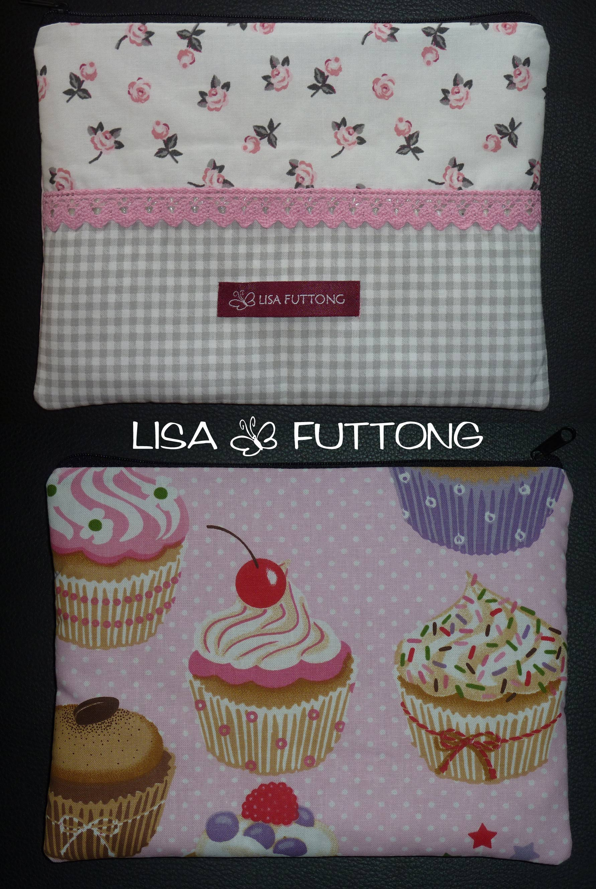
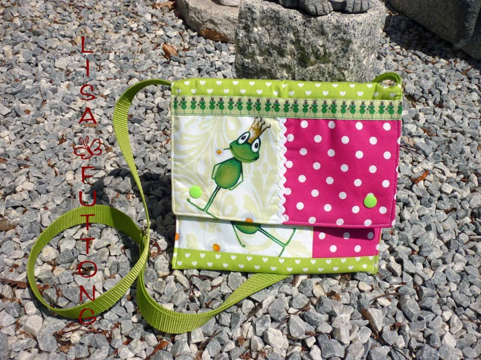

<div id="posts">

<p>

     <h2 class="title">Aktuell im Shop</h2>


      <p>

      </p>


<a href="images/tablettaschen/cupcakestablet.jpg" rel="prettyPhoto[pp_gal]" title="Tablettasche ca.20x14cm für   7 Zoll Tablet PCs, Vorgerseite mit Spitzenband, Rückseiten mit leckeren Cupcakes, schließt mit Reisverschluss, 21,95 €">
        
     </a>

<p>

     <h2 class="title">Leider schon verkauft</h2>
      <h2 class="title">Aber trotzdem hübsch anzusehen</h2>

      <p>

      </p>
       <a href="images/tablettaschen/tabletsfrosch.jpg" rel="prettyPhoto[pp_gal]" title="Wer küsst den Frosch? Tablettasche für 7 Zoll Tablet PCs, mit 2 kleine Taschen im Deckel für Handy, Utensilien und Co, verkauft">
        
    </a>

      <a href="images/tablettaschen/meintablet.jpg" rel="prettyPhoto[pp_gal]" title="Meine eigene Tablettasche, zuckersüß, unverkäuflich">
        
    </a>


</div>

{% include sub_menu.html %}
